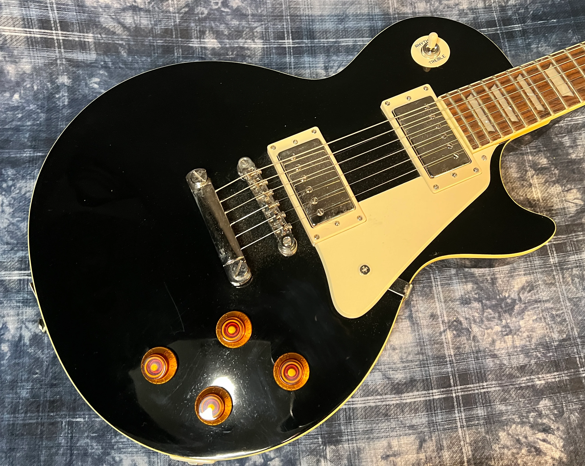
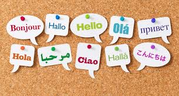

For as long as I can remember, I’ve loved writing stories. English was always my favorite subject, but even outside of the classroom, I wrote my own narratives to share with my friends. That day in March 2020 when quarantine began, I distinctly remember watching the news with my mother, and she leaned over to me and said, “You could write a book about this.” Back then, current events were so outlandish that they might as well have been dystopian, and since that was my favorite genre at the time (and still is), I got to work creating a story about what might happen if the government never found the cure to COVID-19. Looking back, it was quite a dark creative writing prompt, but it was the most passionate I had ever felt towards any one of my stories. The “story” became novel-length fast, and once I completed it in early 2021, my brother suggested that I publish it on Amazon KDP; I had already written the thing, so why not put it out there for the world to read? In 2021, I published that first book, The Pathogen, and since then, I’ve put out three more books, two of them written in the same series as The Pathogen — The Salevy Series. All the books are available in Kindle and paperback formats on Amazon!

Technically, I started playing guitar when I was eight years old, after being inspired by a character on Disney Channel shredding on TV. But I quickly realized that it takes years of learning an instrument to get good enough to play “effortlessly,” and since I was already demotivated by my beginner-level drills, I quit within the year. My father had a stint where he tried to teach me piano, but again, I lacked motivation as a child and I never retained more than the major scale. It was only when I picked up the guitar by my own volition at fourteen did I finally stick with the instrument; now I’m seventeen, so I’ve been playing guitar consistently for nearly three years. I rehearse with other teenagers at School of Rock Del Mar in preparation for our seasonal performances, and by now, I’ve performed every genre from pop to metal to funk. In my spare time, my favorite genre to play is acoustic folk because of the intricate fingerpicking and gorgeous melodies (ex: Hozier and Noah Kahan). I also love to sing along while I play these because it instantly soothes me, no matter how I’m feeling that day.
My parents are from Tamilnadu, India, and their native language is Tamil. I can fluently understand the language because my parents speak it to me and my older brother around the house, but I struggle with forming sentences of my own. I was put into Tamil School when I was around ten or eleven, but I was too old for the teachers to force me to put in actual effort and too young to understand the value of learning my family’s native language. Thus, I didn’t get much out of the experience besides learning the alphabet and some basic words. However, a couple years later, I was put into a school-mandated Spanish class in sixth grade, and I fell in love with it. I went on to take six more classes in Spanish throughout middle and high school, which totals five entire school years of learning the language. I finished AP Spanish last spring, but even though it’s been a year since I maxed out Spanish at CCA, I still keep up my skills by chatting with friends, watching shows, and reading books. So now that I’m proficient in Spanish and have discovered the fun of learning a language, my goal is to become fluent in Tamil.